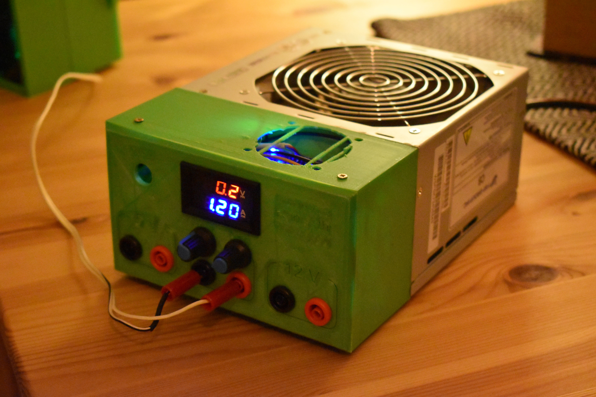
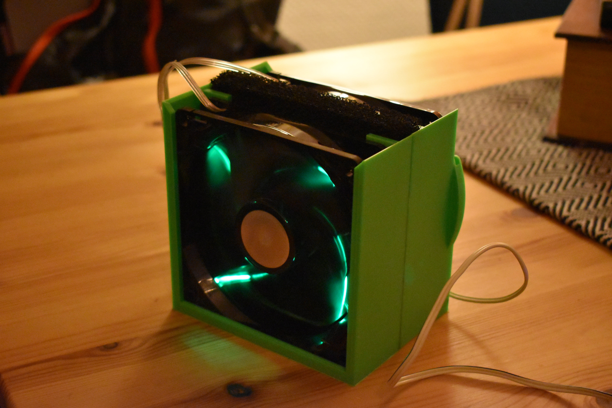
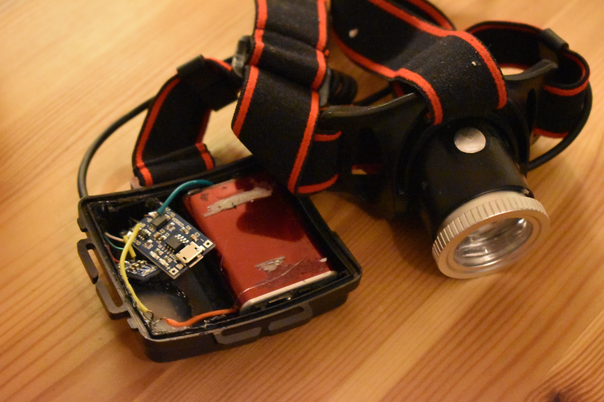

To make this I really only needed the following:
The only thing I needed to do then was to model and print my parts, desolder the potentiometers from the board, and solder on the wires to my other ones which could be turned by thumb. Then I soldered the ammeter and voltmeter LED screen-assembly to the circuit and pressed it in to my 3d-print. Last thing to do was to fit the female banana plugs and solder them to the variable output of the board, and the 5v and 12v rails on the computer powersupply.
It handles max 3 amps (ammeter is bottleneck) and a max of 30V (both voltmeter and power board has this limit) for a maximum power of 90W.

Next on the list is my beloved Fume Extractor. It keeps my lungs free of cancer. What it does is simply to suck away the fumes.
This is really simple, just two old 120mm computer fans which operates at 12V, with some cheap activated carbon filters off of ebay. The bracket to hold it all was of course printed on a 3D-printer. Then the wires for the fans are just soldered together with some banana plugs at the end. They plug nicely into the 12V output on my variable lab bench powersupply described above. (12V outlet is to the right on the picture) The filters are supposed to absorb most of the solderfumes, but one has no guarantee when buying from eBay..

I had a headlamp from Clas Ohlson which was only a couple of years old, but since i left the AA alkaline batteries in there for the summer, I was of course greeted with some nasty leaks when I was going to change them. I figured that a rechargeable headlamp would fit my needs very nice. I also swapped out the LED for a much brighter one.
Parts list:
The battery is actually some leftovers from my E-mountainboard project. The BMS basically takes care of the battery charging/discharging in a nice way and lets me charge it with 5V USB. The most difficult thing about this project was to fit the new LED bead in there, as it was much brigther, and I needed the distance from the lens to be correct.
